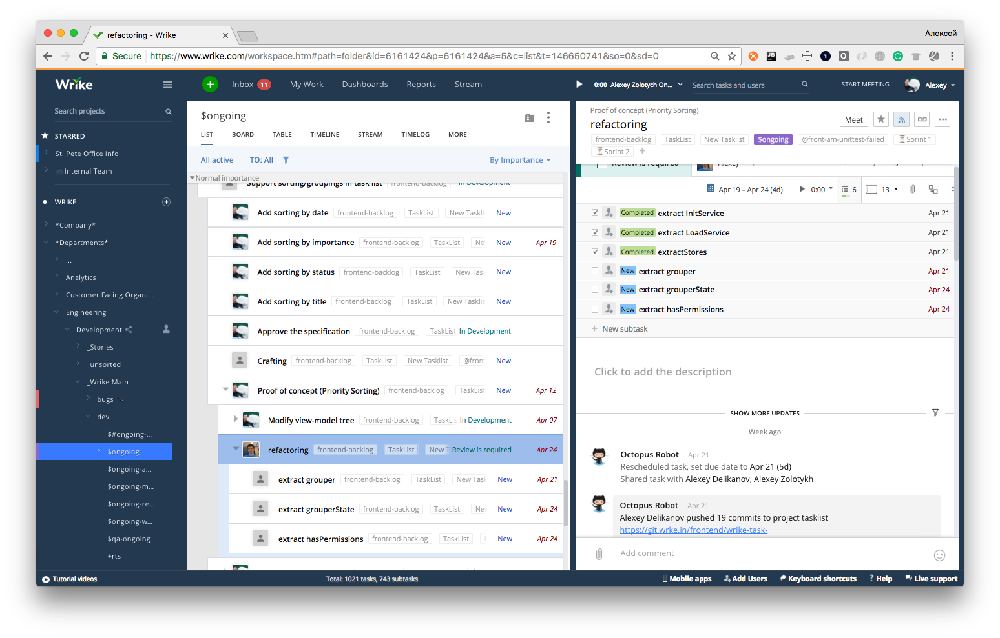
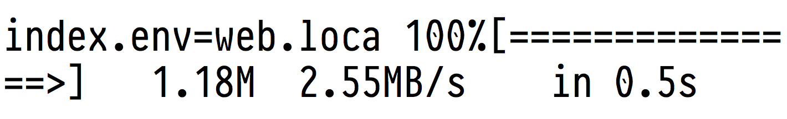
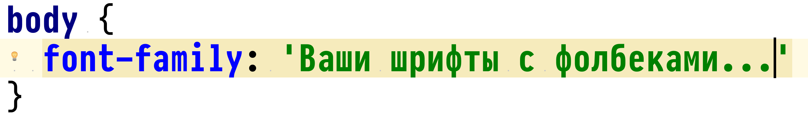
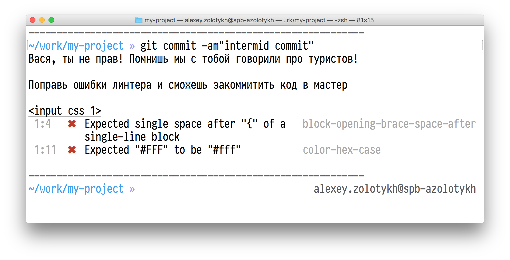
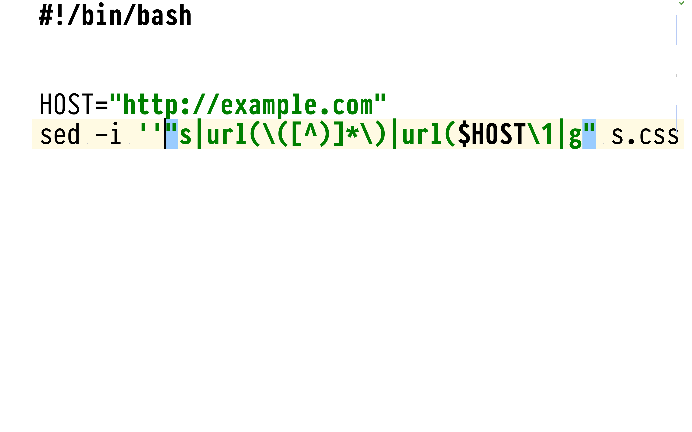
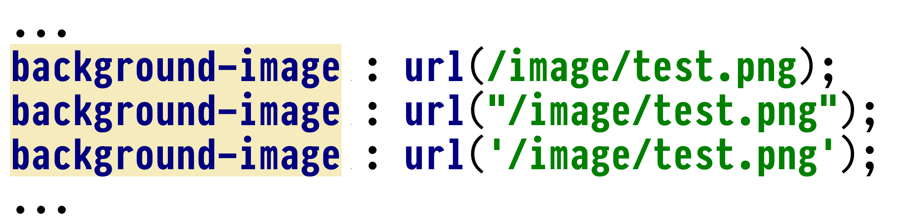

Как отрефакторить миллион строк кода и не сойти с ума
Алексей Золотых, Wrike
Софт для коллаборации
Немного фактов
- Кодовая база с 2007 года
- Измененные библиотеки в git
- 50 фронтенд разработчиков
- 2 000 000 строк кода для фронтенда
- Полная регрессия занимает месяц
Рудольф Клаузиус
1822 — 1888
Второе начало термодинамики
Закон неубывания энтропии
Принцип КИДАО
Принцип SMART
Правила постановки умных задач
- Specific — Конкретный
- Measurable — Измеримый
- Achievable — Достижимый
- Relevant — Актуальный
- Time-bound — Ограниченный во времени
SMART
Легаси стили wrike
Хороший повод для рефакоринга?
Уменьшить размер файла на 20% за 2 недели
- Specific 👍
- Measurable 👎 👍
- Achievable 😜
- Relevant 👍👎
- Time-bound 👎 👍
Это вообще возможно?
Нужен анализ
font-family
CSS здорового человека
Скорее всего семейство шрифтов не поменяется никогда
Наш CSS
- font-family встречается 500 раз
- Занимает 4% от всех стилей
В чем причина?
Почему так?
Компоненты иногда вставляются в отдельную страницу
Решение
- Выпилить из миксинов font-family и сглаживание
- Создать общий CSS файл и тянуть его во все отдельностоящие проекты
Как работать с подобными изменениями?
Правило туриста СССР
полянку нужно оставить чище, чем она была
— Давайте договоримся приводить в порядок код постепенно!
— Настроим статическую проверку кода и внедрим ревью кода!
— Будем выделять на это 10% времени и рефакторить
Решение - ДТПП
Добрые туристы по принуждению!
Git hooks + статический анализ кода
— Нет времени объяснять...
— Нужен коммит
— Мы не можем разрабатывать, все время срабатывают линтеры
Тренировка и еще раз тренировка!
Рефакторинг, когда поздно пить Боржоми

Менять что-то вручную нереально или почти нереально
Два подхода к рефакторингу
- Код как текст
- Код как код
Код как текст
- Работа с путями
- Выпиливание свойств
- Другие небольшие изменения
Меняем пути для картинок
Все предусмотрели?!
Гораздо проще работать с кодом, если он единообразный
stylelint.io
- Поддерживает препроцессоры Less, SCSS...
- Можно написать свои плагины, в том числе и на font-family
Сделать что-то серьзное при помощи текстовых утилит очень тяжело! Нет контекста
Работать в контексте еще сложнее
- Минимум 3 контекста:
html, css, js , less, stylus, typescript, jade, jsx - Контексты плохо связаны между собой
Осторожно!
Не стоит все писать на JS, это может навредить вашему фронтенду!
IDE?
Иногда, в бою, это почти всегда не работает
Иногда приходится писать на коленке
Пример из жизни
CSS → Less — раз плюнуть
Stylus → Less — 💩
Решение
Stylus → CSS → LESS
Проблемы
- Теряем миксины — почти все заменит автопрефиксер
- Получаем грязный CSS — 💩
Stylus → CSS → POSTCSS → LESS
POSTCSS
- Убираем браузерные свойства + добавляем автопрефиксер в сборку
- Приводим свойства к единому виду
- Убираем дублирование
- Выделяем переменные
- Древовидные селекторы
Потенциально можно написать cвой плагин
Мердж изменений — очень больно
Особенно, если вы рефакторите что-то в автоматическом режиме
Решение — полностью автоматическое изменение мастера
- git checkout master
- Запустить скрипт для изменения
- Коммит и пуш
Gulp
gulp.task('refactor', function () {
return gulp.src('folder/**/*.styl')
.pipe(RefactoringPlugin())
.pipe(gulp.dest('./'))
})
Выводы:
- Панацеи нет!
- Учитесь правильно ставить задачи на рефакторинг
- Рефакторить нужно не код, а головой
- Ждите подводных камней
Спасибо! Вопросы?
🌶
twitter: @zolotyh